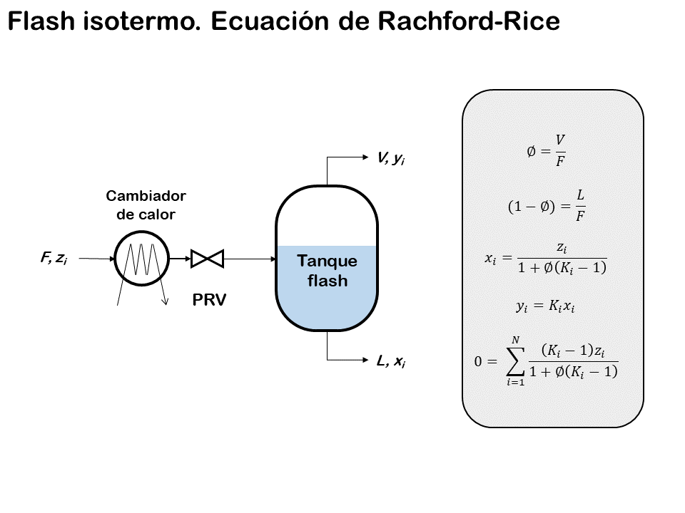

import numpy as np
from scipy.optimize import fsolve
import matplotlib.pyplot as plt Cálculos pTflash, burbulla e orballo
Cálculos flash

Aplicacións
Os cálculos de flash úsanse para procesos de equilibrio vapor/líquido (VLE). Un proceso típico que require cálculos de flash , é aquel no que fluxo de alimentación (F) se separa nun produto vapor (V) e outro líquido (L) como na figura anterior.
Tipos
En principio, os cálculos de flash son sinxelos e implican combinar as ecuacións de VLE cos balances de materia dos compoñentes e, nalgúns casos, o balance de enerxía . Algúns cálculos de flash son:
- Punto de burbulla a unha \(T\) dada (fácil)
- Punto de burbulla a unha \(p\) dada (hase de iterar en T)
- Punto de orballo a unha \(T\) dada (fácil)
- Punto de orballo a unha \(p\) dada (hase de iterar en T )
- Flash a \(p\) e \(T\) (relativamente fácil)
- flash dadas \(p\) e \(H\) (flash estándar, por exemplo, para un flash de tanque despois de unha válvula)
- Flash dadas \(p\) e \(S\) (por exemplo, para unha turbina de condensación)
- Flash dadas \(U\) e \(V\) (por exemplo, para a simulación dinámica dunha batería de flash adiabáticos)
Os últimos tres son un pouco máis complicadas e esixen o cómputo de relacións de equilibrio e balances de enerxía \(H\) , \(S\) , etc. A continuación se ilustran algúns cálculos flash. En todos eles se asumime que o VLE ven dado polos valores de \(K\), que é:
\[ y_i = K_i \cdot x_i \]
onde \(y_i\) é a fraccións molares de cada compoñente \(i\) na fase vapor e \(x_i\) as fraccións molares de cada compoñente \(i\) na fase líquida. En xeral, valor de \(K\) depende da temperatura \(T\) , a presión, \(p\) e a composición (ambas, \(x_i\) e \(y_i\)). Supoñemos mestura idal, e usamos a Lei de Raoult. Neste caso, \(K_i\) depende de \(T\) e \(p\) somentes:
\[ \texttt{Lei de Raoult:} \;\;\; K_i = \frac {p^{saturación}_i (T)} {p} \]
A presión de saturación, \(p^{sat} (T)\) utilizando os parámetros da ecuación de Antoine.
Cálculos do punto de burbulla
Consideremos primeiro cálculos de puntos de burbulla. Neste caso dáse a composición en fase líquida \(x_i\) (corresponde ao caso en que \(V\) é moi pequena (\(V \geq 20\)) e \(x_i = z_i\) na figura). O punto de burbulla dun líquido é o punto no que o líquido xusto comeza a evaporarse (ferver), que é, cando a primeira burbulla de vapor se forma. Dada unha temperatura constante, debese diminuír a presión ata que se forma a primeira burbulla. Dada unha presión constante, débese aumentar a temperatura ata que se forma a primeira burbulla. En ambos os casos, esto correspondese con axustar \(T\) ou \(p\) ata que a suma de das fraccións de vpor é a unidade, $ y_i = 1$ ou:
\[ \sum_i K_i x_i = 1 \]
onde se coñece \(x_i\) . Para o caso ideal onde se cumpre a lei de Raoult isto dá:
\[ \sum_i x_i p_i^{sat} (T) = p \]
Exemplo. Punto de burbulla á temperatura \(T\) dada.
Unha mestura líquida contén 50% de pentano, 30% de hexano e 20% de ciclohexano (en moles), é dicir, \(x_{pentano} = 0.5; x_{hexano} = 0.3 e x_{ciclohexano} = 0.2\). A \(T = 400 K\) se baixa a presión gradulmente. Cál é a presión de burbulla e a composición do primeiro vapor que condensa?. Supoñer unha mestura líquida ideal e gas ideal (lei de Raoult).
As fraccións molares calcúlanse a partires da ecuación de Dalton:
\[ p_{total} = \sum_i p_i \]
logo:
\[ p_i = p_{total}* x_i \]
Por tanto:
\[ x_i = \frac{p_i}{p_{total}} \]
Exemplo Punto de burbula a unha presión dada
Considera o mesmo líquido do problema anterior. Á presión de 5 bar, a temperatura increméntase gradualmente. Cál é atempertura e a composición do primeiro vapor que se forma?.
Cálculos no punto de orballo
Neste caso, coñecemos a composición da fase de vapor \(y_i\) (corresponde ao caso en que \(L\) é moi pequena (\(L \geq 0\)) e \(y_i = z_i\). O punto de orballo dun vapor (gas) é o punto no que comeza a condensaar, é dicir, cando se forma a primeira gota de líquido. A temperatura constante, débese aumentar a presión ata que se forme o primeiro líquido. A presión constante, débese diminuír a temperatura ata que se forme o primeiro líquido. En ámbalos dous casos, isto corresponde axustar \(T\) ou \(p\) ata que
\[ \sum x_i = 1 \]
ou:
\[ \Sigma_{i} y_{i} / K_{i}=1 \]
onde \(y_i\) ven dado. Para unha mestura ideal que cumpre ca lei de Raoult:
\[ \Sigma_{i} \frac{y_{i}}{p_{i}^{\mathrm{sat}}(T)}=\frac{1}{p} \]
Caso práctico 01. Punto de burbulla a unha temperatura dada.
Unha mestura líquida contén 50% de moles de pentan, 30% de moles de hexano e 20% de moles de ciclohexano. Calcular a presión do punto de burbulla cando, á temperatura constante de \(T\) = 400 K, se reduce progresivamente a presión. Cal é a presión da primeira burbulla que se fiorma e a composición do primero vapor que se forma supoñendo comportamento ideal (Lei de Raoult).
Este caso é do tipo 1. O cálculo é inmediato xa que a temperatura é constante. Simplemente aplicamos as fórmulas. Necesitamos os valores das constantes de ecuación de Antoine para os compoñentes da mestura:
Solución con python
Importamos librerías necesarias
# Datos
x_pentano = 0.5
x_hexano = 0.3
x_ciclohexano = 0.2
# pentano C5H12
T = 400 # K
A_pentano = 3.97786
B_pentano = 1064.840
C_pentano = -41.136
# hexano C6H14
A_hexano = 4.00139
B_hexano = 1170.875
C_hexano = -48.833
# cyclohexano C6H12
A_ciclohexano = 3.93002
B_ciclohexano = 1182.774
C_ciclohexano = -52.532Despois, calculamos as presións de vapor dos compoñentes puros:
p_sat_pentano = 10 ** (A_pentano - B_pentano / ( C_pentano + T ))
p_sat_hexano = 10 ** (A_hexano - B_hexano / ( C_hexano + T ))
p_sat_ciclohexano = 10 ** (A_ciclohexano - B_ciclohexano / ( C_ciclohexano + T ))
print('Presión de saturación do pentano puro ', '(', T, ') K = ', p_sat_pentano, 'bar')
print('Presión de saturación do hexano puro ', '(', T, ') K = ', p_sat_hexano, 'bar')
print('Presión de saturación do ciclohexano puro', '(', T, ') K = ', p_sat_ciclohexano, 'bar')Presión de saturación do pentano puro ( 400 ) K = 10.247260621669657 bar
Presión de saturación do hexano puro ( 400 ) K = 4.64675917786267 bar
Presión de saturación do ciclohexano puro ( 400 ) K = 3.3576881112499817 barp_pentano = x_pentano * p_sat_pentano
p_hexano = x_hexano * p_sat_hexano
p_ciclohexano = x_ciclohexano * p_sat_ciclohexano
print('Presión parcial do pentano ', '(', T, ') K = ', p_pentano, 'bar')
print('Presión parcial do hexano ', '(', T, ') K = ', p_hexano, 'bar')
print('Presión parcial do ciclohexano ', '(', T, ') K = ', p_ciclohexano, 'bar')Presión parcial do pentano ( 400 ) K = 5.1236303108348284 bar
Presión parcial do hexano ( 400 ) K = 1.3940277533588008 bar
Presión parcial do ciclohexano ( 400 ) K = 0.6715376222499964 barA presión total (que é a de orballo) é a suma das presións parciais,
\[ p_{total} = \sum_i p_i \]
por tanto aó queda sumar as presións parciais e imprimir o resultado:
p_burbulla = p_pentano + p_hexano + p_ciclohexano
print('Presión de burbulla ', '(', T, ') K = ', p_burbulla, 'bar')Presión de burbulla ( 400 ) K = 7.189195686443625 barAs fraccións molares calcúlanse a partires da ecuación de Dalton:
Como:
\[ p_{total} = \sum_i p_i \]
e:
\[ p_i = p_{total}*x_i \]
temos que:
\[ x_i = \frac{p_i}{p_{total}} \]
x_pentano = p_pentano / p_burbulla
x_hexano = p_hexano / p_burbulla
x_ciclohexano = p_ciclohexano / p_burbulla
print('Fracción molar do pentano no punto de burbulla = ', x_pentano)
print('Fracción molar do hexano no punto de burbulla = ', x_hexano)
print('Fracción molar do ciclohexano no punto de burbulla = ', x_ciclohexano)Fracción molar do pentano no punto de burbulla = 0.7126847750849584
Fracción molar do hexano no punto de burbulla = 0.19390594082554496
Fracción molar do ciclohexano no punto de burbulla = 0.09340928408949663Caso práctico 02. Punto de burbulla a presión dada.
Considera a mesma mestura líquida cun 50% molar de pentano, un 30% molar de hexano (2) e un 20% molar de ciclohexano (3). A \(p\) = 5 bar, aumenta gradualmente a temperatura. Cal é a temperatura e a composición da burbulla do primeiro vapor que se forma?.
Caso práctico 03. Punto de orballo a temperatura dada T
Unha mestura de vapor contén 50% pentano (1), 30% hexano (2) e 20% ciclohexano (3) (todo en precentaxe molar), é dicir, \(y_1\) = 0,5; \(y_2\) = 0,3; \(y_3\) = 0,2. A \(T\) = 400 K, a presión aumenta gradualmente. Cal é a presión do punto de orballo e a composición do primeiro líquido que se forma?. Asume unha mestura líquida ideal e gas ideal (Lei de Raoult). Solución. A tarefa é atopar o valor de \(p\): \[ \sum_i \frac {y_i} {p_i^{sat} (T)} = \frac {1} {p} \]
Caso práctico 04. Punto de orballo á presión dada p.
Considera un vapor cun 50% pentano (1), 30% hexano (2) e 20% ciclohexano (3). A \(p\) = 5 bar, a temperatura diminúe gradualmente. Cal é a temperatura do punto de orballo e a composición do primeiro líquido que se forma?.
Caso práctico 05. Punto de orballo con compoñentes non condensables.
Calcula a temperatura e a composición dun líquido en equilibrio cunha mestura de gas que conteña 10% pentano (1), 10% hexano e 80% nitróxeno (3) a 3 bar. O nitróxeno está moi por encima do seu punto crítico e pode considerarse non condensable.
Diagramas T-x-y para mesturas ideais
En ese caso estudiaranse os diagramas e comportamento do equilibrio vapor-líquido (VLE) dunha mestura n-hexano/n-octano. No diagrama, a liña azul representa o límite da fase líquida (punto de burbulla) e a liña verde representa o límite da fase vapor (punto de orballo).
Mesturas binarias
Paraa unha mestura ideal binaria de \(A\) e \(B\), a presión da fase vapor \(P\) é a suma da presión parcial dos dous compoñentes \(p_A\) e \(p_B\). A Lei de Raoult, polo contrario, serve só para mesturas ideais: \[ \begin{align*} p_A & = x_A P^{sat}_A(T) \\ p_B & = x_B P^{sat}_B(T) \end{align*} \] Eliminando as presións partcais e obtendo unha expresión para a presión de vapor total: \[ P = \underbrace{x_A P_A^{sat}(T)}_{p_A = y_AP} + \underbrace{x_B P_A^{sat}(T)}_{p_B = y_BP} \] Para mesturas binarias, a substitucións \(x_B = 1-x_A\) e \(y_B = 1 - y_A\) da unha expresión para a presión total en función da composición \(x_A\) e a temperatura: \[ P = \underbrace{x_A P_A^{sat}(T)}_{p_A = y_AP}+ \underbrace{(1-x_A) P_A^{sat}(T)}_{p_B=(1-y_B)P} \] Esta relación pódese demostrar representando \(P\), \(p_A\), e \(p_B\) como functións de \(x_A\) a temperatura constante.
O seguinte paso é seleccionar unha temperatura \(T\) e evalúar e mostrar \(P\), \(p_A\) e \(p_B\) fas funcións da fracción molar da fase líquidaunctions of liquid phase mole fraction \(x_A\).
Ecuación de Antoine
Os cálculos deste caderno usan a Ecuación de Antoine para calcular a presión de vapor de saturación para unha temperatura dada e resolve a Ecuación de Antoine para a temperatura de saturación dunha presión dada.
A librería thermo implementa un conxunto completo de datos de propiedades físicas e químicas en Python.
A presión de saturación do compoñente \(i\) calcúlase mediante a ecuación de Antoine: \[ p_i^{sat} = 10^ \left ( A_i - \frac {B_i} {T+C_i} \right ) \] onde \(i=1\) para o n-hexano e \(i=2\) para o n-octano, \(p_i^{sat}\) é a presión de saturación (bar), \(A_i\), \(B_i\) e \(C_i\) son as constantes de Antoine, e \(T\) a temperatura (°C).
A lei de Raoult úsase para calcular as presións do punto de burbulla e do punto de orballo por medio do emprego dos factores \(k\): \[ k_i = \frac {y_i} {x_i} = \frac {p_i^{sat}} {p} \]
onde \(y_i\) é a fracción molar do compoñente \(i\) na fase vapor, e \(y_1 + y_2 = 1\), \(x_i\) a fracción molar do compoñente \(i\) na fase líquida, e \(x_1 + x_2 = 1\), e \(p\) é a presión total (bar).
A presión do punto de burbulla calcúlase usando a seguinte ecuación: \[ \sum k_ix_i =1 \]
\[ p = x_1 p_1^{sat} + x_2 p_2^{sat} \]
A presión do punto de orballo calcúlase usando a seguinte ecuación: \[ \sum \frac {y_i} {k_i} = 1 \]
\[ p = \left ( \frac {y_1} {p_1^{sat}} + \frac {y_2} {p_2^{sat}} \right ) \]
Caso práctico 02.
- Representa o diagrama P-x-y para unha temperatura de 115 ºC
- Representar o diagrama T-x-y para unha presión de 1.5 bar.
Bibliografía
[1] J. R. Elliott and C. T. Lira, Introductory Chemical Engineering Thermodynamics, New York: Prentice Hall, 2012 pp. 372–377.